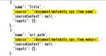

CCCMKホールディングス TECH Labの Tech Blog
https://techblog.cccmkhd.co.jp/
TECH Labスタッフによる格闘記録やマーケティング界隈についての記事など
フィード

Chainlitを使ってチャットアプリを作ってみました！
CCCMKホールディングス TECH Labの Tech Blog
Chainlitを使ってチャットアプリを作ってみました！ こんにちは、CCCMKホールディングス TECH LABの三浦です。 先日久しぶりに飛行機に乗りました。当たり前のことなのですが、飛行機を使うと数100キロ離れていてもあっという間に移動することが出来ます。朝起きた場所と、夜眠る場所が数100キロも離れてるなんてなんだか不思議だな、と思いました。 最近以前から試してみたいな、と思いつつ、なかなか試すことが出来ていなかったChainlitというPythonのライブラリをついに試すことが出来ました！Chainlitを使うととてもスピーディーにチャット型のアプリケーションを作ることが出来ます。…
13時間前
Multi-Agent Conversationの様々なAgent構成について調べてまとめました。
CCCMKホールディングス TECH Labの Tech Blog
Multi-Agent Conversationの様々なAgent構成について調べてまとめました。 こんにちは、CCCMKホールディングス TECH LABの三浦です。 卒園式や卒業式のシーズンです。この時期になると自分が大学を卒業して新社会人になった時のことを思い出したりします。当時は"クラウド"という概念が出始めたころで、サーバーを自分の知らない場所において利用するなんて全然イメージが湧いてなかったのですが、今はそれが当たり前のようになりました。振り返るとあっという間に感じますが、世の中は当時から色々大きく変わったんだな、と感じます。 前回LLMを活用するテクニック"Multi-Agent…
8日前

AI SearchでSharepoint上のデータをベクトル化する
CCCMKホールディングス TECH Labの Tech Blog
こんにちは、CCCMKホールディングスTECH LABの井上です。 前回の記事の続きになります。 AI SearchのSharePointからのインデックス作成をやってみました - CCCMKホールディングス TECH Labの Tech Blog 前回、Sharepointをデータソースにしてベクトル化したときにメタデータが取得できないというところで終了したのですが、できました。 使ったAPIのリクエスト内容は以下のものになります。 データソース作成 POST https://{{search_service}}.search.windows.net/datasources?api-vers…
12日前

Multi-Agent Conversation Framework "AutoGen"を使ってみました。
CCCMKホールディングス TECH Labの Tech Blog
Multi-Agent Conversation Framework "AutoGen"を使ってみました。 こんにちは、CCCMKホールディングス TECH LABの三浦です。 日曜日は天気が良くて、近所をのんびり散歩してみました。春は外を歩くのが気持ちがいいです。散歩していると見慣れた近所にもまだまだ知らなかった発見があることに気が付きます。こんなところから富士山が見えるんだ、とか、スカイツリーが見えるんだ、とか、少し得した気持ちになりました。 さて、LLM(大規模言語モデル)を使ってタスクを解決するためのテクニックは様々なものが提案されていますが、最近知ったテクニックがとても面白いアプロー…
15日前
Terraformのmoduleを使ってみました！
CCCMKホールディングス TECH Labの Tech Blog
Terraformのmoduleを使ってみました！ こんにちは、CCCMKホールディングス TECH LAB三浦です。 小学生になる子どもと、算数の問題の解き方を一緒に考えることが増えてきました。学年を重ねるごとにどんどん問題が難しくなっていきます・・・。大人になった今の視点から算数の勉強を見ていると、問題の設定から法則を見つけてより分かりやすい問題に置き換える、抽象化のテクニックを算数の勉強を通じて教えようとしているのかな、と感じます。正しく物事を抽象化することは大人になってからも求められることが多いので、算数を通じて学んだことは多かったんだな、と思いました。 前回IaC(Infrastru…
22日前
IaC(Infrastructure as Code)について調べ、Terraformに入門しました。
CCCMKホールディングス TECH Labの Tech Blog
IaC(Infrastructure as Code)について調べ、Terraformに入門しました。 こんにちは、CCCMKホールディングス TECH LABの三浦です。 はてなブログでは今週のお題で「習慣にしたいこと・していること」が設定されているそうです。私は最近英語の勉強が習慣化出来なくて悩んでいます・・・。特に発音の勉強をしているのを周りに聞かれるのが恥ずかしくて、一人になれる時間や場所を探しているうちにどんどん後回しになってしまっている感じです。なんとかしないといけないな、と思っています。 これまでAIやML周りの開発に携わってきたのですが、最近はクラウドでそれらを稼働するためにど…
1ヶ月前
単一画像からの消失点推定技術の紹介
CCCMKホールディングス TECH Labの Tech Blog
こんにちは。テックラボの高橋です。 最近単一画像からのカメラ位置を推定する方法について調べていたところ、fSpyというアプリケーションを知りました。 こちらは手動で消失点を設定してあげることでBlender等で画像のカメラの位置を取り込んでくれるアプリです。 カメラの向きがわかると、背景画像に対して自然にVFXのような合成をすることができるみたいですね。 www.youtube.com しかし、人間が目で消失点を判断できるのですから、最近の技術だったら機械的に消失点の位置が求められるのではないでしょうか？ 調査してみると、何本か実現できそうな技術を取り扱っている論文がありました。 今回は202…
1ヶ月前
AI SearchのSharePointからのインデックス作成をやってみました
CCCMKホールディングス TECH Labの Tech Blog
こんにちは、CCCMKホールディングスTECH LABの井上です。 昨年11月にプレビュー公開されたAzure AI SearchのSharePointからのインデックス作成機能を使ってみました。 AI SearchはBlob、SQL Server、Table Storage等からデータを取得してインデックスを作成できるのですが、SharePointがその中に新たに加わった形です。 SharePointから取得できるものはドキュメントライブラリ内にあるPDFやMS Office等のファイルとなります。ASPX（ページ内に書いてあるテキスト）やリストからは取得できないようです。 弊社でも社内のブ…
1ヶ月前
RAGの改善？Fine Tuning？LLMのFine Tuningの使いどころについて調べてみました。
CCCMKホールディングス TECH Labの Tech Blog
RAGの改善？Fine Tuning？LLMのFine Tuningの使いどころについて調べてみました。 こんにちは、CCCMKホールディングスTECH LABの三浦です。 なんだか急に暖かくなり、少し戸惑っています。このまま春の陽気になるのかな、と油断するとまた寒い日が来そうな気がするので、冬物の衣服はまだクリーニングに出せないな、と思いました。 gpt-3.5-turboやgpt-4といったLarge Language Model(LLM)を用いた色々な取り組みをしていると、上手くいくケースもあれば、望んでいる結果が得られないこともあります。そういった場合に次に取るべきアクションはなんだろ…
1ヶ月前
LangServeを使ってLangChainで作ったChainをREST APIにしてみました。
CCCMKホールディングス TECH Labの Tech Blog
LangServeを使ってLangChainで作ったChainをREST APIにしてみました。 こんにちは、CCCMKホールディングスTECH LABの三浦です。 節分を過ぎると毎年少しずつ暖かい日が増えてくるように感じます。実際に今日はとても暖かい日で、いい天気で、どこかに出かけたくなりました。 今回はLangChainで作ったChatGPTなどのLLMsを絡めた処理:ChainをREST APIとして提供することが出来るLangServeというライブラリを試してみました。使い方についてはもう少し深堀したいところもありますが、基本的な機能でもかなり色々なことが出来るライブラリだと感じました…
1ヶ月前
レコメンデーションタスクへのLarge Language Modelsの活用について調べてみました。
CCCMKホールディングス TECH Labの Tech Blog
レコメンデーションタスクへのLarge Language Modelsの活用について調べてみました。 こんにちは、CCCMKホールディングスTECH LAB三浦です。 私の住んでいる街でも雪が降り、朝には少し雪が積もっていました。雪が降るのを見ながら、「寒くなるな・・・」とか、「道が歩きにくくなるな・・・」とか、「電車動くのかな・・・」とか、マイナスなことばかり考えている自分に気づきました。子どもの頃は雪が降ると、いつもと違う雰囲気にワクワクしていました。そういえばいつから雪を見てワクワクしなくなったんだろう、とふと考えたりしまいた。 さて、今回は最近興味があって調べていたレコメンデーションタ…
2ヶ月前
LangChain Expression Language (LCEL)を使って色々Chainを組んでみました！
CCCMKホールディングス TECH Labの Tech Blog
LangChain Expression Language (LCEL)を使って 色々Chainを組んでみました！ こんにちは、CCCMKホールディングスTECH LABの三浦です。 先日申請していた子どものパスポートを子どもと一緒に取りに行きました。子どものパスポートは有効期限が5年なので、次回は5年後、新しいパスポートを取りに行くことになります。5年後、子どもは今よりもきっと成長していて、もしかしたら一人でパスポートを取りに行くのかもな、と思うと、少ししんみりしました。 さて、ChatGPTを使ったアプリケーションを開発していると、ChatGPTに対してあるプロンプトを実行させ、その結果を…
2ヶ月前
Retrieval-Augmented Generation周辺のテクニックについて調べたのでまとめてみます。
CCCMKホールディングス TECH Labの Tech Blog
Retrieval-Augmented Generation周辺のテクニックについて調べたのでまとめてみます。 こんにちは、CCCMKホールディングスTECH LABの三浦です。 今週のお題「急に休みになったら」。はてなブログの今週のお題ですが、私は急に休みになったら電車に乗って行ったことがない場所に行ってみたいです。特に普段乗っている電車の終点の駅には行ったことがないので、のんびり電車に揺られながら、どんな街なのか見に行ってみたいです。 さて、現在Large Language Models(LLMs)の活用方法でよく取り上げられるのがRetrieval-Augmented Generatio…
2ヶ月前
Azure AI SearchとLangChainによるRAGの実装を試してみました。
CCCMKホールディングス TECH Labの Tech Blog
こんにちは、CCCMKホールディングス TECH LAB三浦です。 文章を書く機会がこの頃少しですが増えてきました。私は書きたいことがたくさん出てきて上手くまとめられず、ぐちゃぐちゃになってしまうことが多い気がします。ついつい書きたいことを書いてしまいそうになりますが、一度落ち着いて、「もし自分がこの文章を読む立場だったら」という気持ちになって振り返ると不必要な内容が見えてくることが多いです。要点が分かりやすい文章を書けるようになりたいと思っています。 さてChatGPTなどのLarge Language Models(LLMs)に外部データを参照させて質問に回答させるテクニックRetriev…
2ヶ月前
LLMsからより良い回答を得るためのプロンプトの方針について、論文を読んでみました。
CCCMKホールディングス TECH Labの Tech Blog
こんにちは、CCCMKホールディングスTECH LABの三浦です。 2024年も1週間が過ぎ、今日から仕事初めの方が多いように感じます。それに伴い色々な業務が今日から開始されるので、少しずつ感覚を戻していきたいと思います。 Large Language Models(LLMs)からより適切な回答を得るためには、モデルに与える指示、つまりプロンプトをどのように作るかが重要になります。最近より良いプロンプトを作るための26の方針についてまとめられた論文が公開され、一度目を通してみたい、と思い読んでみました。論文の中では26の方針それぞれについて、それを導入することでモデルからの応答の質と精度がどれ…
3ヶ月前
Azure AI StudioとAzure AI Searchを使ってChatBotアプリケーションを作ってみました。
CCCMKホールディングス TECH Labの Tech Blog
こんにちは、CCCMKホールディングス TECH LAB三浦です。 2024年が始まりました。今年も引き続き、色々なことを調べたり、試していきたいと思います。 さて、今回はMicrosoftの"Azure AI Studio"というAIを活用したアプリケーション開発プラットフォームを試してみました。ChatGPTなどの生成AIに対し期待されることとして、保有するデータやノウハウ、ツールを上手に活用していきたい、ということが挙げられると思います。Azure AI Studioはまさにそのニーズに答えることを目的としたプラットフォームだと感じました。 Azure AI Studioを実際に試してみ…
3ヶ月前
GPTsのActionsからAPIコールをしてデータ抽出してみました
CCCMKホールディングス TECH Labの Tech Blog
こんにちは、CCCMKホールディングスTECH LABの井上です。 前回の記事からの積み残しであった、GPTsのActionsを使ってみました。 GPTsから見た今後のChatGPTへの期待 - CCCMKホールディングス TECH Labの Tech Blog 社内でも「簡単にデータの取得ができれば嬉しい」という声もあったこともあり、今回実現した内容は「自然言語でのテーブル情報の取得」です。 これ自体はpanadsA等Iを使ってもできるのですが、今回はAPIの機能はデータ抽出処理のみの前提で検討しました。 また、SQL+DBで実装したかったのですが、セキュリティ上の都合によりpandas+c…
3ヶ月前
Gemini: GoogleのマルチモーダルAIのテクニカルレポートを読んでみて感じたこと。
CCCMKホールディングス TECH Labの Tech Blog
こんにちは、CCCMKホールディングス TECH LABの三浦です。 2023年もいよいよ終わりが近づいてきました。今年は色々ありましたが、学ぶことが多い1年だったと思います。特に"AI"がこれまで以上に身近になり、多くの人とAIをきっかけに会話をしたり、仕事をしたり出来たことがとても良かったです。来年も色々な人たちと色々なことにチャレンジ出来たらいいな、と思っています。 さて、去年の今頃どんなことを調べていたのかな、とちょっと気になり、ブログの記事を振り返ってみるとこちらが去年最後に書いた記事であることが分かりました。 techblog.cccmkhd.co.jp 当時GPT-3に興味を持っ…
3ヶ月前
Jetson AGX Orin開発者キットで動かしたOWL-ViTについて論文を読んで調べてみました！
CCCMKホールディングス TECH Labの Tech Blog
こんにちは、CCCMKホールディングス TECH LAB三浦です。 12月なのにとても暖かくなったり、12月らしい寒さになったり、最近気候が安定していない感じがします。気候が安定しないと身体も疲れやすくなりますね。年齢を重ねるにつれ、体調の変化に敏感になってきました。疲れたな、と思ったときは、ストレッチをしたり休憩したりして自分の体調を気遣うようになりました。 前回Jetson AGX Orin開発者キットをセットアップし、生成AIを動かしてみた話をご紹介しました。 techblog.cccmkhd.co.jp 前回の段階ではオープンソースのLLMを動作させることは出来たのですが、NanoOW…
3ヶ月前
Jetson AGX Orin開発者キットをセットアップしてLLMを動かしてみました。
CCCMKホールディングス TECH Labの Tech Blog
こんにちは、CCCMKホールディングス TECH LABの三浦です。 2023年も残り僅かになりました。10月くらいからバタバタすることが多く、暑い季節が過ぎてからあっという間に年末になってしまった気がします。今年を振り返ってみると、自分にとって一番ホットだった話題は"LLM"だったなぁと思います。これまでの考え方が色々と変わるきっかけになりました。 さて、今回は久しぶりにデバイスを触ってみようかな・・・と思い、Nvidiaのエッジコンピュータ"Jetson AGX Orin開発者キット"をセットアップしてみました。調査不足なところもあり、ところどころ不明確なところもあるのですが、Huggin…
4ヶ月前
DatabricksのDelta Live Tablesを使ってみました！
CCCMKホールディングス TECH Labの Tech Blog
こんにちは、CCCMKホールディングス三浦です。 12月に入り、寒い日が増えてきました。毎年冬になるとしもやけで手が荒れてしまうので、今年はとにかく気が付いたらハンドクリームを塗ることを意識しています。今年こそ、痛い思いをせずに冬を越したいです。 今回は以前から一度試してみたいな、と思っていたDatabricksの"Delta Live Tables"という機能を試してみました。"Delta Live Table"を使うことでクラウドストレージに格納されたCSVやJSON形式のファイルを機械学習やデータ分析に適したテーブル形式に加工するまでの一連の流れを1つのパイプラインとして組むことが出来ま…
4ヶ月前
Bot Framework ComposerでAzure OpenAI Serviceと接続したBotアプリケーションを作ってみました。
CCCMKホールディングス TECH Labの Tech Blog
こんにちは、CCCMKホールディングス TECH LABの三浦です。 近所の街路樹が紅葉していて「秋だなぁ」と思ったのですが、もうすぐ12月なんですよね。例年だったらもっと早く紅葉している気がします。なんだか今年は色々、いつもと違うリズムの一年になったように感じています。 さて、先日Bot Framework Composerに入門した話をご紹介しました。 techblog.cccmkhd.co.jp その後も色々試しながらBot Framework Composerについて調べており、最近ようやく少しずつですが仕組みが理解出来てきました。そこで今回はMicrosoft Teamsから送ったメ…
4ヶ月前
GPTsから見た今後のChatGPTへの期待
CCCMKホールディングス TECH Labの Tech Blog
こんにちは、CCCMKホールディングスTECH LABの井上です。 11/7にChatGPTの大幅なアップデートと発表がありました。 その1つにGPTs（GPT Builder）というのものがあります。 もうすでに色々と記事も出回ってるので興味ある方はお試し済みかと思います。 別でネーミングするのであれば「簡単RAGシステム_チャットボット作成ツール」でしょうか。 ファイルを作成画面でアップロードするとその内容を元に回答を生成することができるようになります。 都度のアップロードが必要になりますが普通のGPT-4のプロンプトからも同様なことはできます。 ちなみにGPTsで作ったチャットボットから…
4ヶ月前
Azure Speech ServiceとAzure OpenAI Serviceを組み合わせてChatGPTと会話をしてみました！
CCCMKホールディングス TECH Labの Tech Blog
こんにちは、CCCMKホールディングス TECH LABの三浦です。 急に寒くなったせいか、先日風邪を引いてしまいました。昔からそうなのですが、風邪を引いた時は変な夢を見ることが多いです。夢占いや夢診断があるように、どんな夢を見たのかを調べることで体調や気持ちの状態など紐解くことが出来るのかも、と思いました。 さて、今回はAzure AI Serviceに含まれている音声データを扱うAzure Speech ServiceとChatGPTなどを利用できるAzure OpenAI Serviceを組み合わせてChatGPTと音声でやり取りが出来る簡単な仕組みを作ってみた話をご紹介します。 作ろう…
4ヶ月前
LLMに独自のデータを参照させて回答させるRAGをAzure Databricksで実装してみました。
CCCMKホールディングス TECH Labの Tech Blog
こんにちは、CCCMKホールディングス TECH LABの三浦です。 この前の土日に大学の頃のサークルのメンバーとオンラインで10数年ぶりに会話をしました。その次の日は学生の頃から好きなアーティストのライブに行きました。 なんだかこの土日は学生の頃のことを思い出すことが多く、大学生に戻ったような、なんだか不思議な気持ちになりました。色々経験をして「自分は変わったなぁ」と思うことがありますが、変わっていないところもたくさんあるんだなぁと感じた週末でした。 さて、普段機械学習のモデル開発で主に利用しているAzure Databricksですが、最近はChatGPTなどのLLMに与えるプロンプトの開…
4ヶ月前
BotFramework Composerに入門してみました！
CCCMKホールディングス TECH Labの Tech Blog
こんにちは、CCCMKホールディングス TECH LABの三浦です。 街の雰囲気が黄色から赤色に変わり、ハロウィンが過ぎて次はクリスマスなんだなぁと感じました。11月に入り今年も残すところあと2か月です。年の終わりに「いい一年だった」と思えるように、がんばっていきたいなと思います。 さて、今回はMicrosoftのBot開発環境BotFramework Composerを使ってBotアプリケーションする方法について色々調べてみました。さらに開発したBotをAzureにデプロイし、Microsoft Teamsからテストするところまで試してみました。 Botアプリケーションの中ではAzure O…
5ヶ月前
画像形式のドキュメントの内容を理解する"LayoutLM"について調べてみました。
CCCMKホールディングス TECH Labの Tech Blog
こんにちは、CCCMKホールディングス TECH LAB三浦です。 この前夕方過ぎに洗濯物を取り込むためにベランダに出たら、満月を見ることが出来ました。せっかくなのでそのまま近所を少し歩いてみたりしました。秋の夜は過ごしやすくて好きな時間です。もう少ししたら冬がきて寒くなってしまうので、今だけの秋の夜長を楽しみたいなと思います。 さて、身の回りには色々なドキュメントがあります。メール、マニュアル、契約書、議事録、請求書・・・。それらは電子データとして発生したものもあれば、紙として発生したものもあります。ドキュメントの内容を解析する場合、電子データ由来のドキュメントは比較的解析がしやすいです。一…
5ヶ月前
テックブログのホームページURL変更のお知らせ
CCCMKホールディングス TECH Labの Tech Blog
テックブログのホームページURL変更のお知らせ 2023年11月1日より、ホームページのURLを下記の通り変更いたします。 ■変更前：techblog.cccmk.co.jp/ ■変更後：techblog.cccmkhd.co.jp/ ｢ブックマーク｣などに登録していただいている場合は、設定の変更をお願いいたします。
5ヶ月前
UnityとNiantic Lightshipを用いてARアプリケーションを作成してみた
CCCMKホールディングス TECH Labの Tech Blog
はじめに こんにちは。CCCM テックラボ所属の高橋です。 AR(拡張現実)は現実世界に仮想的なオブジェクトを重ね合わせる技術です。 ゲームやスマホアプリを通じて、最近は皆さんの身近でもしばしば見かけるようになったと思います。 ARアプリケーションを開発するツールとして有名な物のひとつがUnityです。 そのUnityで使うことができるライブラリに、Pokemon GOで有名なNiantic社が提供しているNiantic Lightshipというパッケージがあります。 今回はNiantic Lightshipを用いて3DデータのAR表示を行うアプリケーションを作ってみました。 Niantic …
5ヶ月前
BLIP: Bootstrapping Language-Image Pre-trainingモデルをFine-Tuningして果物と野菜の数を数えてみました。
CCCMKホールディングス TECH Labの Tech Blog
こんにちは、CCCMKホールディングス TECH LABの三浦です。 すっかり秋めいてきました。この時期は着る服に困ることが多く、着すぎると暑いし、着ないと寒いです。考えるのがだんだん面倒になってしまい、気が付くといつも同じ服を着てしまいます。 さて、人が周囲から情報を得るための基本的な形式として言語(テキスト)と画像が挙げられます。この2つの形式のデータを同時に扱うことが出来ると、たとえば質問文に対して画像で回答したり、画像に対して説明文を生成するタスクに活用が出来ます。 最近、OpenAIがGPT-4 with vision (GPT-4V)というマルチモーダルAIを発表しました。どんなこ…
5ヶ月前